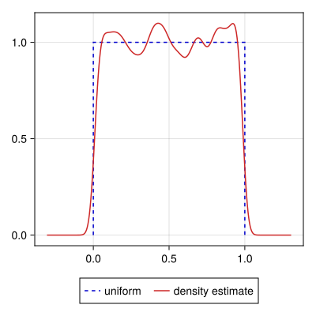
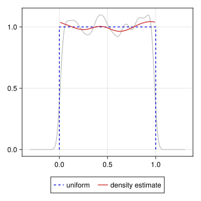

Working with domain boundaries
The previous example (Getting Started - Simple kernel density estimate) arises often and is handled well by most kernel density estimation solutions. Being a Gaussian distribution makes it particularly well behaved, but in general distributions which are unbounded and gently fade away to zero towards $\pm\infty$ are relatively easy to deal with. Despite how often the Gaussian distribution is an appropriate [approximation of the] distribution, there are still many cases where various bounded distributions are expected, and ignoring the boundary conditions can lead to a very poor density estimate.
This page describes the built-in boundary condition interface. See the package extension for Distributions.jl for an alternate specification which uses distributions to set appropriate boundary conditions and limits.
Univariate example
Take the simple case of the uniform distribution on the interval $[0, 1]$.
x = rand(5_000)By default, kde assumes the distribution is unbounded, and this leads to "smearing" the density across the known boundaries to the regions $x < 0$ and $x > 1$:
K0 = kde(x)
We can inform the estimator that we expect a bounded distribution, and it will use that information to generate a more appropriate estimate. To do so, we may make use of three keyword arguments in combination:
loto dictate the lower bound of the data.hito dictate the upper bound of the data.boundaryto specify the boundary condition, such as:open(unbounded),:closed(finite), and half-open intervals:closedleft/:openrightand:closedright/:openright.
The lo, hi, and boundary keywords are conveniences provided only by the univariate KDE method. The bounds and boundary conditions may equivalently (and more fundamentally) be set via a tuple to the bounds = (lo, hi, boundary) keyword argument which is used for the bivariate and multivariate interfaces as well.
In this example, we know our data is bounded on the closed interval $[0, 1]$, so we can improve the density estimate by providing that information
K1 = kde(x, lo = 0, hi = 1, boundary = :closed) # or bounds = (0, 1, :closed)
Note that in addition to preventing the smearing of the density beyond the bounds of the known distribution, the density estimate with correct boundaries is also smoother than the unbounded estimate. This is because the sharp drops at $x = \{0, 1\}$ no longer need to be represented, so the algorithm is no longer compromising on smoothing the interior of the distribution with retaining the cut-offs.
Bivariate example
Boundary interface
...
The boundary condition for each dimension is one of the enum values in the Boundary module or an eponymously-named lowercase symbol:
:open ≡ Open:closed ≡ Closed:closedleft ≡ ClosedLeftand also aliased as:openright ≡ OpenRight:closedright ≡ ClosedRightand also aliased as:openleft ≡ OpenLeft
A boundary specification is (at its core) is one of the following forms:
BoundsSpec— A "complete" (3-tuple) specification comprised of a lower/left limit, upper/right limit, and a boundary condition. A subset of the tuple elements may benothingor-Inf/+Inf, in which case the "missing" elements are inferred from the data or remainder of the specification.See
boundsfor a complete description of how missing elements may be inferred.BoundsLims— An "incomplete" (2-tuple) specification comprised only of the lower/left and upper/right limits. The boundary condition is assumed to beOpenBoundsArgs— Either of the previous two forms or the "missing" specificationnothingwhich is interpreted as the inferred open interval(nothing, nothing, Open).
The built-in base case is the bounds method that accepts a tuple of data vectors and a tuple of BoundsSpec arguments:
...
As special cases when working with 1D data, either the wrapping tuple on the bounds specification may be omitted or both wrapping tuples may be omitted.
julia> bounds(([1.0, 2.0],), (0.0, nothing))((0.0, 2.0, KernelDensityEstimation.Boundary.Open),)julia> bounds([1.0, 2.0], (0.0, nothing))((0.0, 2.0, KernelDensityEstimation.Boundary.Open),)
...